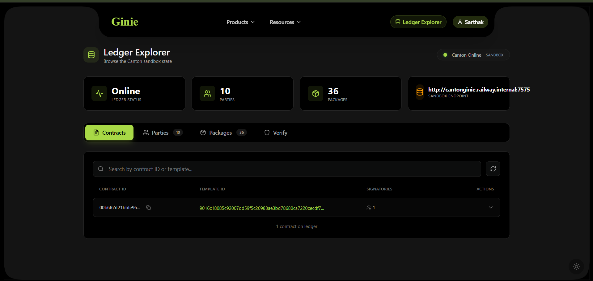
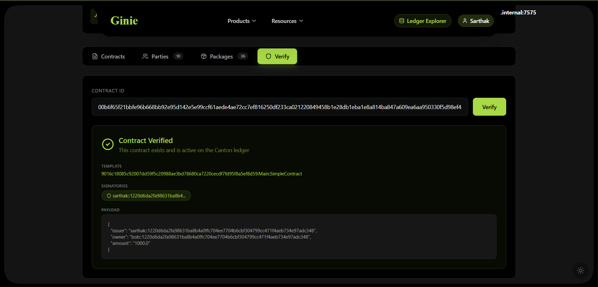

Contract Templates
Ginie ships with 20 validated institutional contract templates — each with a live Contract ID on GinieNet that you can verify on CantonScan before deploying your own version.
| Template | Description | Complexity | Parties |
|---|---|---|---|
| IOU | Simple bilateral debt obligation with transfer and settle choices | ~60 lines | 2 |
| Token Transfer | Fungible asset transfer between two parties with atomic settlement | ~80 lines | 2 |
| Bond | Debt instrument with issuer, holder, coupon, and maturity | ~120 lines | 2 |
| Repo Agreement | Securities repurchase with initial sale and repurchase choices | ~140 lines | 2 |
| DvP (Delivery vs Payment) | Atomic exchange of asset against cash — two-leg settlement | ~160 lines | 3 |
| Custody | Asset custody arrangement with client, custodian, and instruction choices | ~130 lines | 3 |
| AML Attestation | KYC/AML compliance attestation with regulator observer | ~90 lines | 3 |
| Multi-Party Settlement | Three-party workflow with sequenced approval and settlement | ~180 lines | 3 |
| Escrow | Conditional payment held by a neutral third party | ~110 lines | 3 |
| Subscription | Recurring payment obligation with cancel and renew choices | ~95 lines | 2 |
Template prompt patterns
| What you want | Example prompt |
|---|---|
| Vanilla IOU | "Create an IOU between Alice and Bob for £10,000 GBP. Alice can transfer, Bob can settle." |
| Bond with coupon | "Create a fixed-rate bond: issuer Alice, holder Bob, £50,000 principal, 5% annual coupon, matures 2026-01-01." |
| DvP settlement | "Create a delivery vs payment: Alice delivers 100 tokens to Bob, Bob pays £5,000. Settlement is atomic." |
| KYC attestation | "Create a KYC attestation where Compliance can approve Alice, and Regulator can observe but not modify." |
Ledger Explorer
The Ledger Explorer gives you a live view of the Canton sandbox state — all contracts, parties, packages, and a verification tool. Access it via Ledger Explorer in the header or navigate to /explorer.

What the Explorer shows
| Tab | What you see |
|---|---|
| Contracts | All contracts visible to your party, filtered by the Daml privacy model. Contract ID, Template ID, and signatory count. |
| Parties | All parties allocated on the sandbox. Shows party ID and display name. |
| Packages | All DAR packages uploaded to the ledger. Shows Package ID and metadata. |
| Verify | Paste any Contract ID to verify it exists on the ledger and inspect its payload. |
Verifying a contract
The Verify tab accepts any Contract ID and returns the full contract payload — template, signatories, and field values. This is the on-ledger proof that your contract exists and is active.

Full-Stack dApp Builder
Available from M2. Ginie can generate a complete full-stack Canton dApp — a Daml contract layer plus a Next.js frontend with CIP-0103 wallet connectivity — from a single English prompt.
What gets generated
- Daml smart contract module (compiled, audited, deployed)
- IDL JSON spec (
schemas/idl-spec.json) — the canonical interface description - Complete Next.js frontend using
@canton-network/dapp-sdk - CIP-0103 wallet connection (SubWallet compatible)
- Hosted on a
mydamldapp.ginie.devsubdomain — live and accessible - Full project export bundle — deployable to Vercel with zero modification
Generation flow
| Step | Output | Notes |
|---|---|---|
| Contract layer | src/Main.daml — compiled, audited, deployed | Same as standard Ginie generation |
| Interface extraction | schemas/idl-spec.json | Canonical IDL for the frontend generator |
| Frontend generation | Next.js 14 TypeScript project | Type-safe from the IDL spec — no manual binding |
| Wallet integration | CIP-0103 + SubWallet connect button | Uses official @canton-network/dapp-sdk |
GitHub Integration
Every Ginie generation can automatically commit the full project to a GitHub repository in your account. You own the code. Ginie is just the tool that generated the starting point.
What gets committed
| File | Contents |
|---|---|
src/Main.daml | Full generated Daml source |
daml.yaml | Canton SDK 3.4 configuration with correct version string |
AUDIT_REPORT.md | Complete 5-gate audit findings with line-level citations |
UPGRADE_NOTES.md | SCU upgrade path documentation |
Makefile | make build, make test, make deploy — zero Ginie dependency |
README.md | Contract description, party setup, deployment instructions |
Iterating creates pull requests
When you click Iterate to modify a deployed contract, Ginie creates a new branch, applies the changes, and opens a pull request against your repo. The PR includes a diff of what changed, and the new audit report is posted as a PR comment. Gate 5 runs against the new version — if the change violates SCU compatibility, the PR is flagged before you merge.
Recompilation independence
Every generated repo includes a Makefile with make build, make test, and make deploy. Once a contract is in your GitHub repo, you can compile, test, and redeploy it with standard Canton SDK tooling — no Ginie required, ever.
MCP Server
Available from M2. Ginie exposes a Model Context Protocol (MCP) server integrating with Build-on-Canton MCP tools — wiring live Canton documentation and tooling directly into Ginie's pipeline agents and your AI editor of choice.
| Tool | What it does | Used by |
|---|---|---|
canton_lookup | Queries live Canton documentation and API reference | RAG Layer — augments pattern retrieval with live docs |
canton_check | Validates Daml code against current Canton SDK rules | Fix Agent — surfaces deprecated patterns before compilation |
canton_network_info | Returns current Canton Network state and ledger metadata | Deploy Agent — confirms deployment target before DAR upload |
Using the MCP server with your AI editor
The Ginie MCP server is compatible with Claude Code, Cursor, Windsurf, and any editor that supports the MCP protocol. Point your editor's MCP configuration to the Ginie server endpoint to get Canton-aware AI assistance — the same knowledge base Ginie uses internally becomes available in your own coding workflow.
IDE Extensions
Available from M3. Ginie ships IDE extensions for VS Code, Cursor, and JetBrains — bringing generation and audit capabilities directly into your development environment.